Thelio Major (Parts & Repairs)
Many components in your Thelio Major can be upgraded or replaced as necessary. This page uses photos of the initial revision for this generation (R3-0). Minor case details may vary on newer units, but screw counts, general component locations, and other details should remain the same unless otherwise noted.
Power the machine off, switch off the power supply, and unplug all peripherals before working with any internal components. Then, follow these step-by-step guides for instructions:
- Replacing the front accent strip
- Removing the top case
- Replacing the GPU
- Replacing the case fans
- Removing the CPU shroud
- Adding/removing 2.5" storage drives
- Replacing the RAM
- Replacing the M.2 drives
- Replacing the CPU fans
- Replacing the CPU cooler/thermal paste and CPU
- Replacing the power supply
- Replacing the Thelio-IO board
- Troubleshooting the power button
Replacing the front accent strip:
Thelio Major includes a customizable accent panel on the front of the case, which can be swapped to change the case's look and feel. The instructions for swapping the accent are also available in video form.
Tools required: None
Time estimate: 30 seconds
Difficulty: Easy ●
Steps to replace the front accent strip:
- Place the system on the edge of the desk so the front side is hanging off of the desk.
- The system can alternatively be lifted or tilted so the front of the computer is hovering above the desk.
- Slide the accent strip down to unlock it.
- The accent can be gripped at the bottom edge.
- Pull the accent strip off of the case, starting with the bottom edge.
- Place the new accent strip onto the front of the case and slide it up to lock it into place.
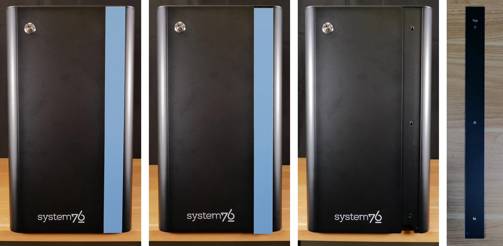
Removing the top case:
The top case can be removed to access the internal components.
Tools required: Cross-head (Phillips) screwdriver (optional)
Time estimate: 2 minutes
Difficulty: Easy ●
Steps to remove the top case:
- Remove the eight outer screws holding the top case onto the machine.
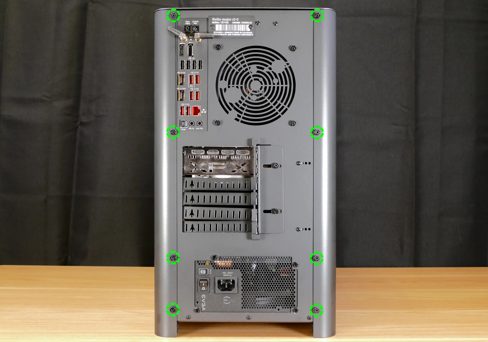
- Slide the top case up and off of the machine.
Replacing the GPU:
Thelio Major supports two multi-slot dedicated GPUs:
- The top GPU slot is a PCIe 5.0 x16 slot.
- There are four units of clearance in the back of the chassis.
- This slot shares bandwidth with M.2 slots 2 and 3 (the bottom two M.2 slots); if either of these M.2 slots are populated, then the top GPU slot will operate at x8 bandwidth.
- The bottom GPU slot is a PCIe 4.0 x4 slot.
- There are two units of clearance in the back of the chassis.
- This slot physically fits up to x16 cards, but runs at x4 bandwidth.
Factory configurations only include one GPU.
Tools required: Cross-head (Phillips) screwdriver
Time estimate: 15 minutes
Difficulty: Medium ●
Steps to replace the GPU:
- Follow the steps above to remove the top case.
- Unscrew the four screws holding the side GPU brace in place (two on the front of the case, two on the back.) Remove the brace.
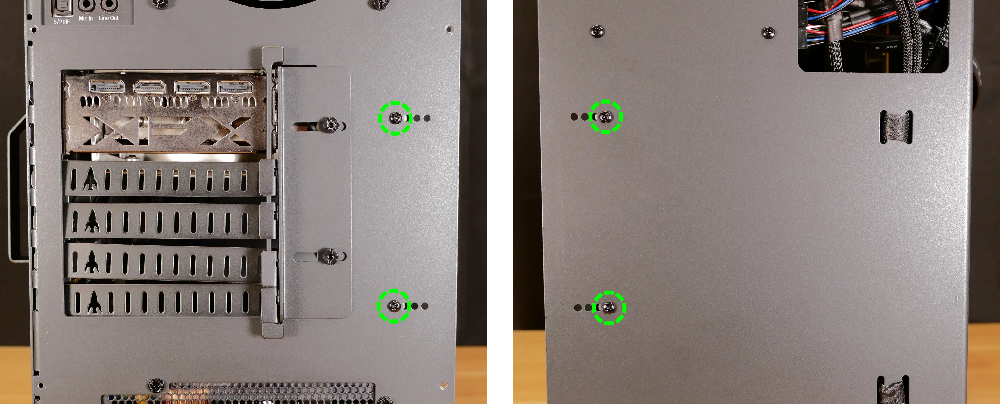
- Unscrew the two back thumbscrews holding the PCIe bracket in place, and remove the PCIe bracket.
- The empty PCIe slot covers will come loose, and can also be removed.
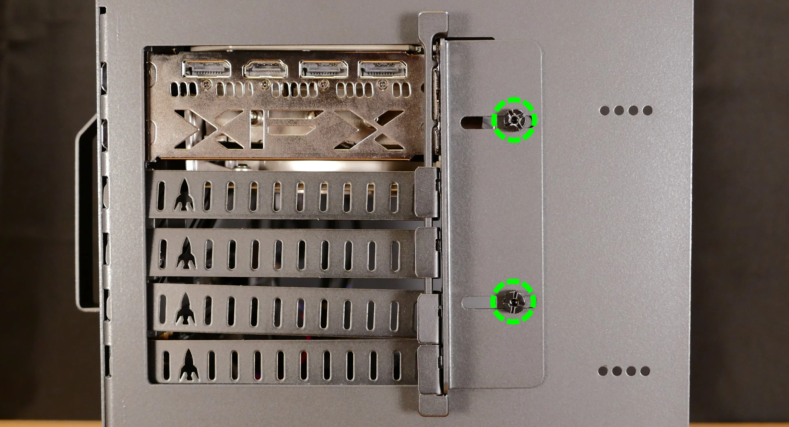
- If you're removing a GPU, unplug the GPU power cable (or cables) from the right side of the card. Hold down the latch on the connector while unplugging the cable.
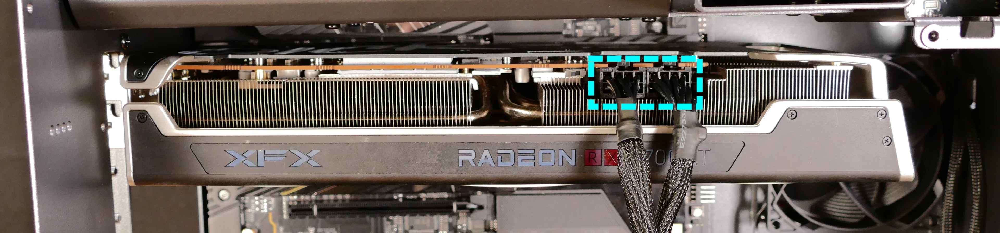
- While holding the GPU, push the PCIe latch release button (highlighted red below) and remove it from the slot.
- If the latch release button doesn't work, you can manually press the PCIe latch (highlighted green) for the corresponding slot using a long, flat object to free the card.
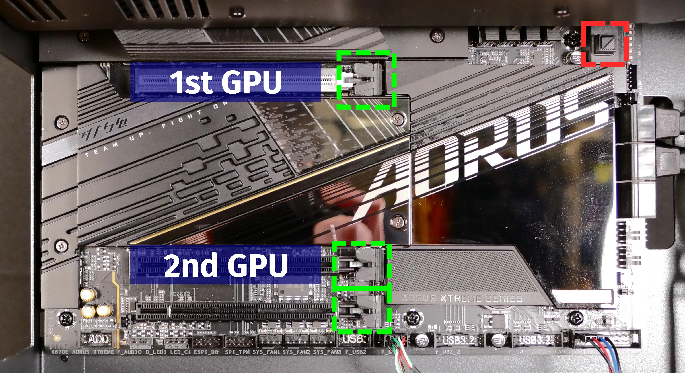
- After inserting the new GPU into its slot, connect the power cable.
- Once the GPU is installed, replace the side GPU brace, back PCIe bracket, and top case.
- The side GPU brace includes screws to adjust for the height and length of the graphics cards.
- The chassis includes multiple sets of screw holes for the side GPU brace to accomodate minor adjustments in graphics card depth; the brace will ship with either short or long GPU fingers (short fingers pictured below), depending on the GPU that was ordered with the machine.
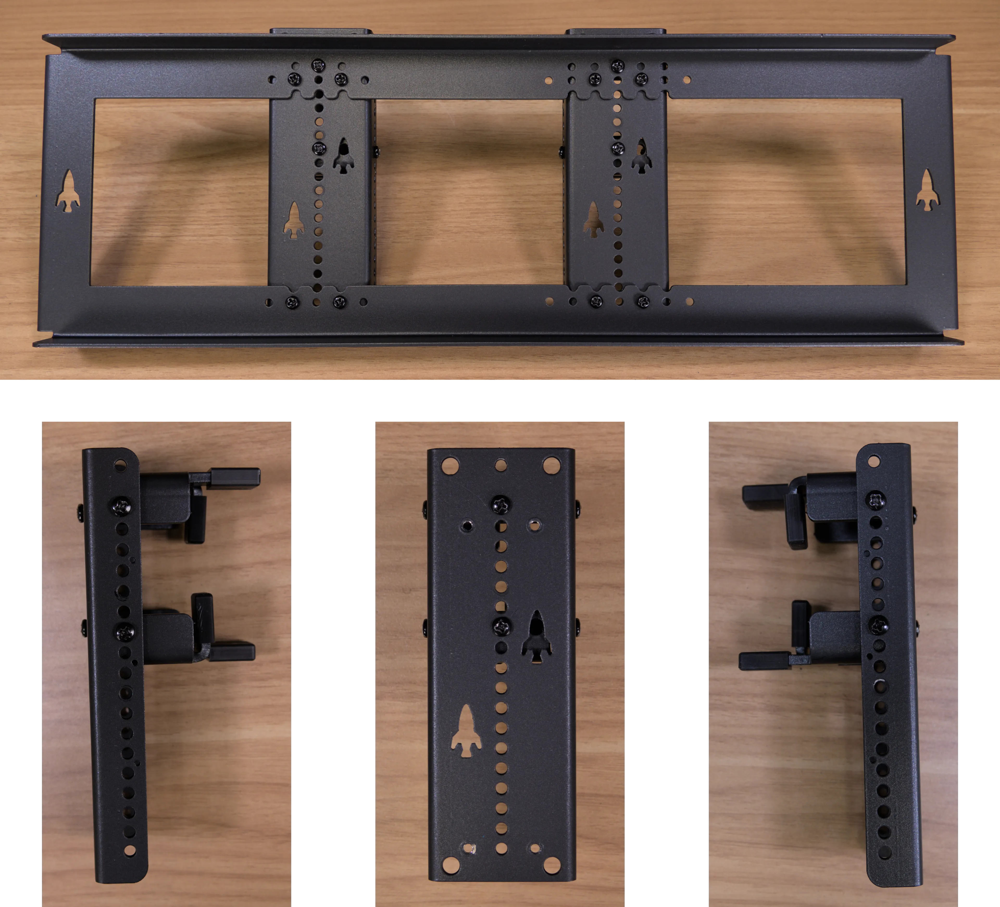
The GPU brace's primary function is to prevent damage during shipping. The system can be run without the brace if it doesn't fit an upgraded card; the back PCIe bracket provides primary support for the GPU.
Replacing the case fans:
Thelio Major R3 has two case-mounted intake fans:
- A 140mm fan on the bottom of the chassis.
- A 92mm fan on the right side of the chassis.
The fans connect to the Thelio-IO board using a Y splitter cable mounted on the inner corner of the case.
Tools required: Cross-head (Phillips) screwdriver
Time estimate: 20 minutes
Difficulty: Medium ●
Steps to replace the bottom case fan:
- Follow the steps above to remove the top case.
- The GPU brace can optionally be removed for easier access to the fans and cables.
- Release the velcro strap and unplug the fan's cable from the Y splitter cable.
- The bottom case fan's cable is round with a mesh net covering.
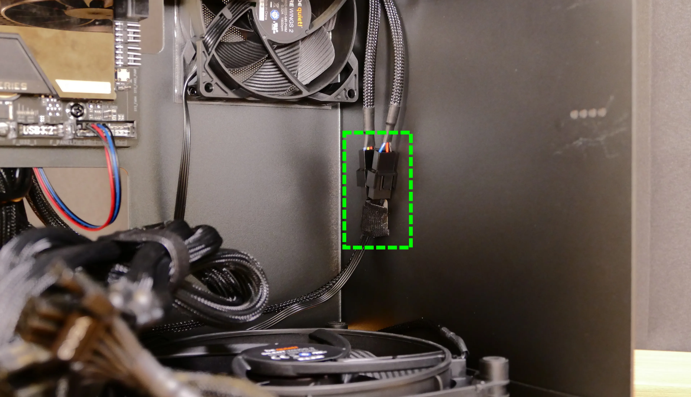
- Unscrew the four fan screws from the bottom of the machine.
- To avoid damaging other components, place the machine on its front side when working with the bottom surface.
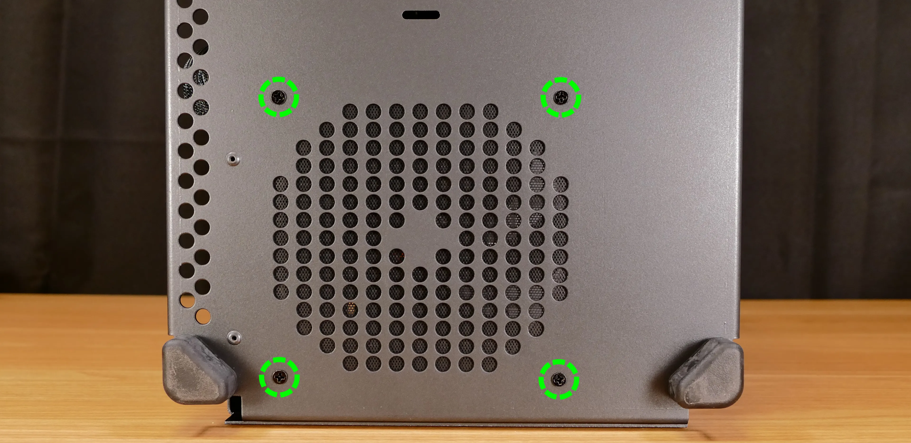
- Remove the old fan from the case.
- When installing the fan, mount the components in the following order:
- Chassis
- Dust filter
- Acrylic spacer
- Fan
- The new fan's cable should be oriented towards the front-right corner of the case.
- The cable runs along the inner corner of the case, and does not pass through any of the cable management holes.
Steps to replace the side case fan:
- Follow the steps above to remove the top case.
- The GPU brace can optionally be removed for easier access to the fans and cables.
- Release the velcro strap and unplug the fan's cable from the Y splitter cable.
- The side case fan's cable is flat with four wires.
- Unscrew the four fan screws from the opposite side of the machine.
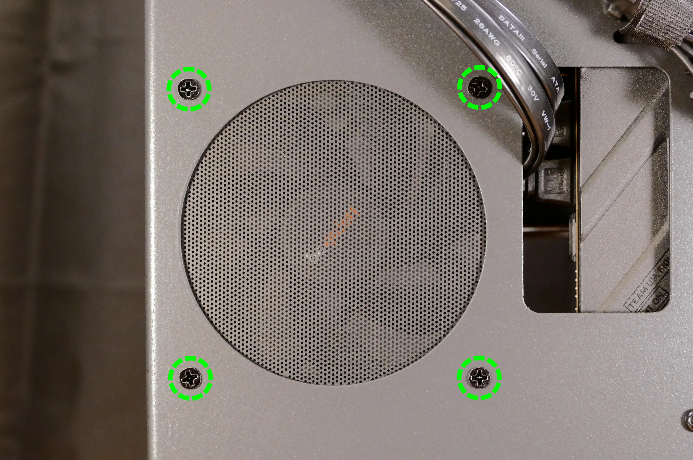
- Remove the old fan from the case.
- When installing the fan, mount the components in the following order:
- Chassis
- Dust filter
- Acrylic spacer
- Fan
- The new fan's cable should be oriented towards the front-right corner of the case.
- The cable runs along the inner corner of the case, and does not pass through any of the cable management holes.
Removing the CPU shroud:
The CPU shroud guides airflow through the CPU cooler. It covers the CPU and partially obstructs the RAM slots, top GPU, and spare 2.5" drive screws.
Tools required: Cross-head (Phillips) screwdriver
Time estimate: 7 minutes
Difficulty: Easy ●
Steps to remove the CPU shroud:
- Follow the steps above to remove the top case and remove the GPU brace.
- The GPU can also optionally be removed to provide more room for working with the components.
- Unplug the connectors for the CPU fans from the splitter board on the chassis, next to the top right corner of the motherboard.
- The splitter board provides the same signal to both ports, so it doesn't matter which fan is plugged into which port.
- By default, the back fan (long cable) is plugged into the top port (
J2), while the front fan (short cable) is plugged into the bottom port (J3).
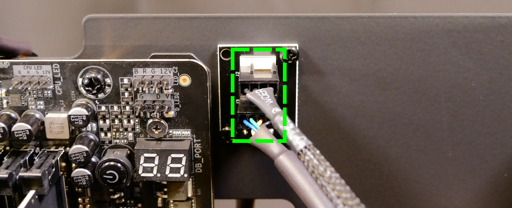
- Unscrew the four back thumbscrews and two crossbar screws holding the CPU shroud in place.
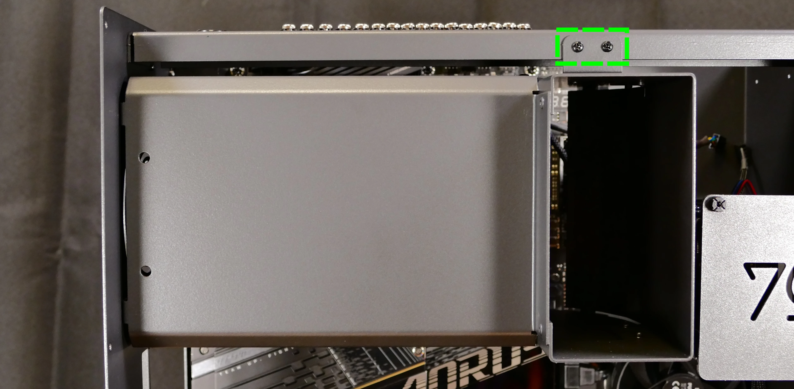
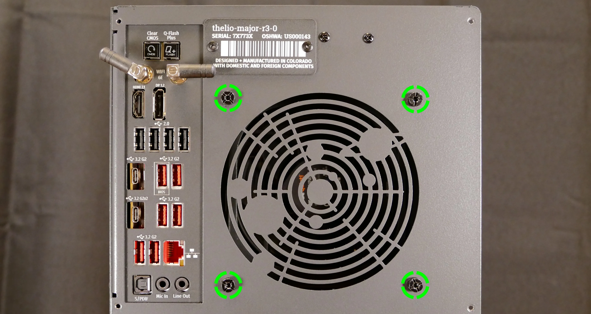
- Pull the CPU shroud away from the machine.
Adding/removing 2.5" storage drives:
Thelio Major R3 supports up to four 2.5" SATA III drives.
Tools required: Cross-head (Phillips) screwdriver (optional), flathead screwdriver (optional)
Time estimate: 7 minutes
Difficulty: Easy ●
Steps to add/remove 2.5" storage drives:
- Follow the steps above to remove the top case.
- Unscrew the two screws securing the drive bay's cover, highlighted green below.
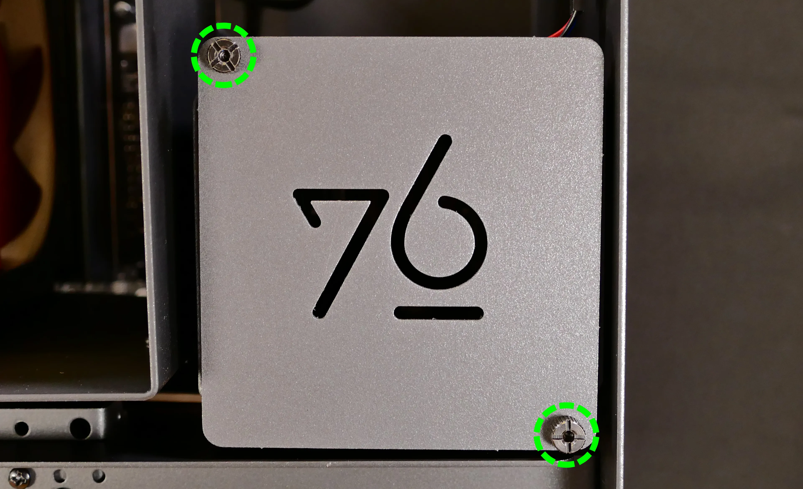
- If you are adding a new drive, pop out the black plastic ring on the top crossbar and slide out four screws (per drive).
- For revisions where the black plastic ring is located over the CPU shroud, the ring can be popped out from below using a flathead screwdriver, or by hand after removing the CPU shroud.
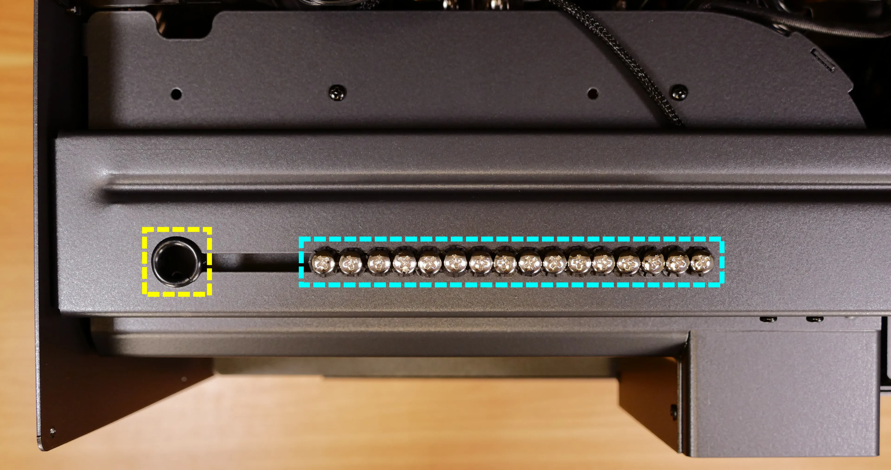
- Insert four screws into each 2.5" storage drive you wish to install.
- Slide each 2.5" drive into one of the slots leading to the Thelio-IO board.
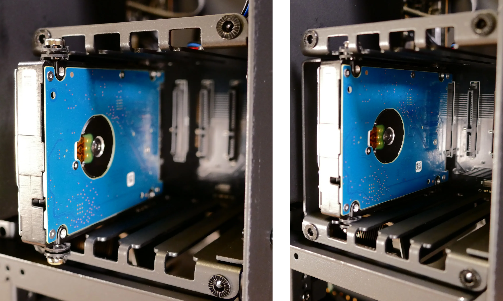
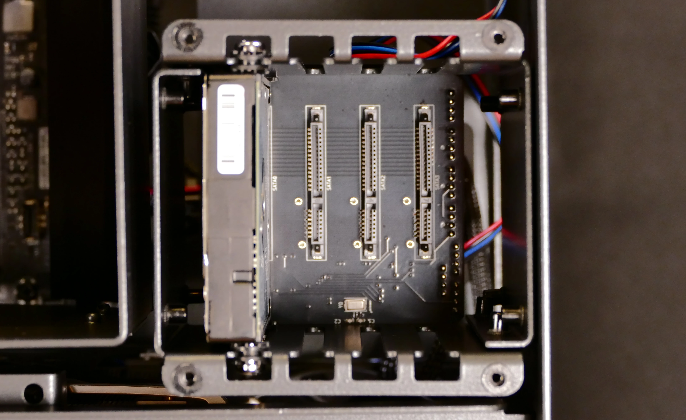
Thelio Major R3 with one 2.5" drive installed.
- Replace the black plastic screw ring and the 2.5" drive bay cover.
Replacing the RAM:
Thelio Major R3 supports up to 128GB (4x32GB) of RAM. The RAM sticks are DDR5 DIMMs (non-ECC) running at a speed of up to 4800MHz. If you've purchased new RAM, need to replace your RAM, or are reseating your RAM, follow these steps.
Tools required: Cross-head (Phillips) screwdriver
Time estimate: 15 minutes
Difficulty: Medium ●
Steps to replace the RAM:
- Follow the steps above to remove the top case and remove the CPU shroud.
- Removing the CPU shroud is optional, but is recommended to provide easier access to the RAM slots.
- To remove an existing RAM stick, flip the top and bottom latches away from the stick, then pull the stick out of the slot.
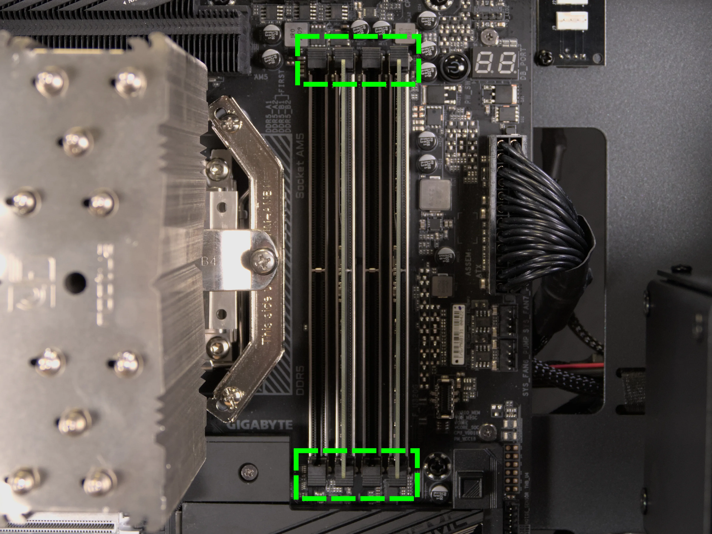
- Make sure the tabs on the top and bottom of the slot are open (pulled away from the slot), then insert the new RAM (or re-seat the existing RAM) into the slot.
- The RAM stick will only fit in one direction. The larger group of pins goes on top.
- Use the following guide for placement of the RAM sticks:

- Replace the top case.
Replacing the M.2 drives:
Thelio Major R3 has four M.2 storage slots. All four slots support PCIe NVMe Gen 5 at x4 bandwidth, sizes 2280 or 25110, and the M key pin arrangement.
M.2 slots 2 and 3 (the bottom two slots) share bandwidth with the PCIe 5.0 x16 slot (the primary GPU slot). If an SSD is installed in M.2 slots 2 or 3, then the PCIe 5.0 x16 slot (the primary GPU slot) will operate at x8 bandwidth. For this reason, M.2 slots 1 and 4 (the top two slots) should be used first.
Tools required: Cross-head (Phillips) screwdriver
Time estimate: 30 minutes
Difficulty: Medium ●
Steps to replace the M.2 drive:
- Follow the steps above to remove the top case and the GPU brace and GPU.
- Unscrew and remove the M.2 heatsink.
- Slot 1 is located underneath the single-height heatsink; slots 2, 3, and 4 are located underneath the triple-height heatsink.
- The heatsink screws are held captive, and will not fully come out of the heatsink.
- It may take some pressure to remove the heatsink and thermal tape from the M.2 drive. After unscrewing the heatsink, pull slowly to avoid breaking the thermal tape.
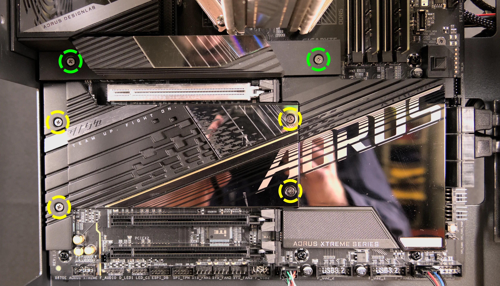
- For the M.2 drive(s) being removed, push the tab upwards to rotate the circular locking ring; the drive will pop away from the motherboard.
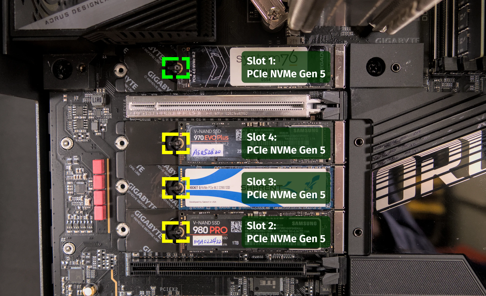
- Remove the existing M.2 drive by pulling it out of the slot.
- Insert the new M.2 drive into the slot; while holding the circular locking ring open, push the drive towards the motherboard.
- While holding the drive in place, let go of the circular locking ring. The ring will rotate back to the closed position.
- Replace the M.2 heatsink, CPU shroud, GPU, GPU brace, and top case.
- If you are populating an SSD slot for the first time, remove any protective plastic that may be covering the thermal tape.
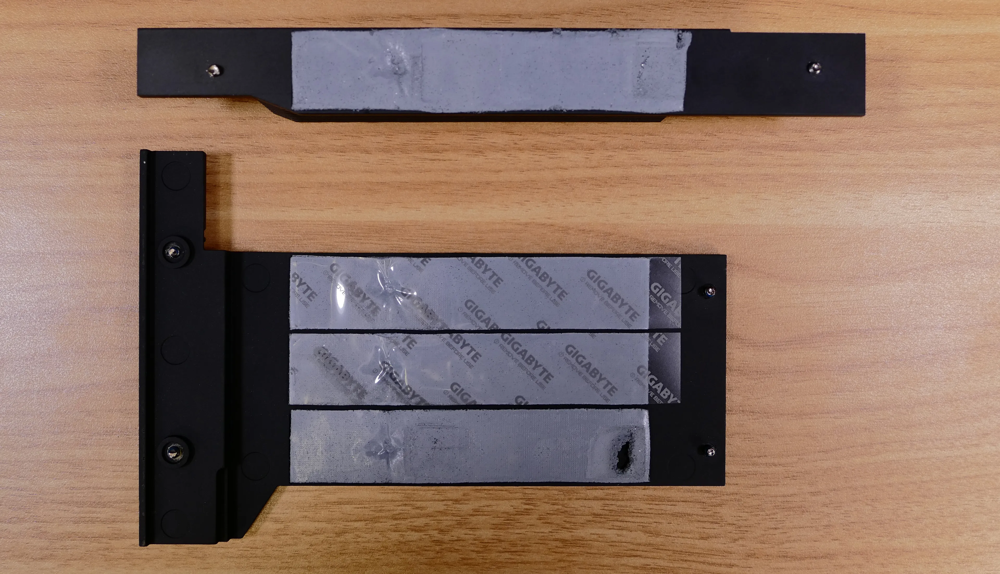
Replacing the CPU fans:
Thelio Major R3 contains two CPU fans mounted within the CPU shroud. The front fan is a Noctua NF-F12, and the back fan is a Be Quiet! Silent Wings 3.
Tools required: Cross-head (Phillips) screwdriver
Time estimate: 25 minutes
Difficulty: Medium ●
Steps to replace the shroud-mounted CPU fans:
- Follow the steps above to remove the top case, remove the GPU brace, and remove the CPU shroud.
- For the fan being replaced, unscrew the four screws holding the fan bracket onto the CPU shroud.
- The front fan's screws are highlighted yellow; the back fan's screws are highlighted red.
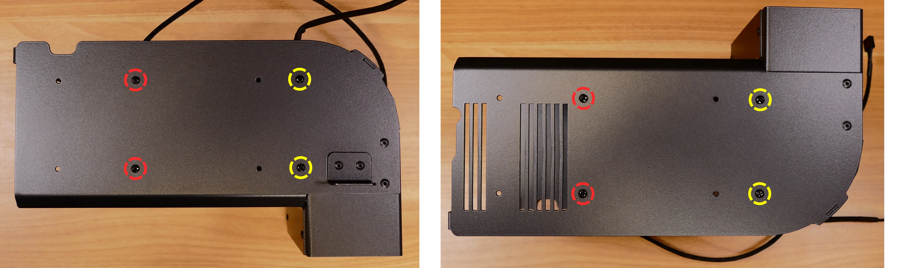
- Unscrew the four screws attaching the bracket to the fan.
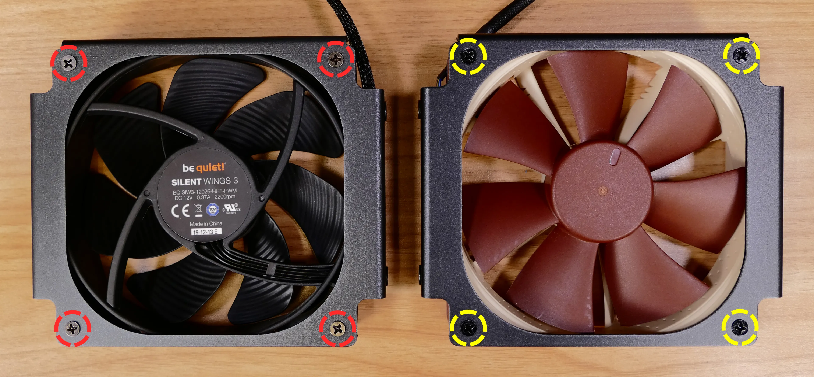
- When reinstalling the fans:
- The front fan's spinning side should face the bracket's screws; the back fan's stationary cover should face the bracket's screws.
- The back bracket should face the back of the shroud, and the front bracket should face the front of the shroud.
- There are two sets of possible screwholes for each bracket; for each bracket, the frontmost set of screwholes (closest to the bent side of the shroud) should be used.
- Once installed, both fans should have their spinning sides facing the front of the machine and their stationary covers facing the back of the machine.
- Both cables should be oriented towards the top edge of the motherboard (the top corner of the open side of the shroud.)
- Overtightening the fan bracket's screws may cause fan noise; if the fan is creating excessive noise, try slightly loosening some of the screws.
Replacing the CPU cooler and CPU:
The CPU cooler dissipates heat from the CPU to the heatsink, where the CPU fans expel it from the system. Depending on your climate and the age of the machine, replacing the thermal paste between the CPU and the cooler/heatsink may help the system run cooler.
The CPU uses an AMD AM5 socket. The CPU cooler is a Noctua NH-U12S.
Tools required: Cross-head (Phillips) screwdriver, thermal paste
Time estimate: 45 minutes
Difficulty: High ●
Steps to remove the CPU cooler/thermal paste:
- Follow the steps above to remove the top case, remove the GPU brace and GPU, and remove the CPU shroud.
- While holding the CPU cooler in place so it doesn't fall, unscrew the two screws holding the CPU cooler crossbar onto the vertical mounting brackets.
- The screws are held captive, and will not fully come out of the crossbar.
- Only the two outer screws need to be removed; the center screw holding the horizontal crossbar onto the heatsink does not need to be removed.
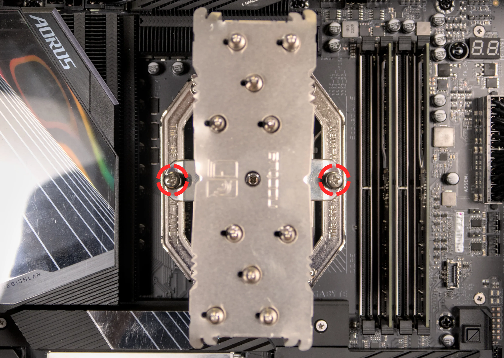
- The cooler will come away from the CPU.
- Using a paper towel, clean the existing thermal paste off of the heatsink and CPU. You may also use a small amount of rubbing alcohol if the old paste is dried or difficult to remove.
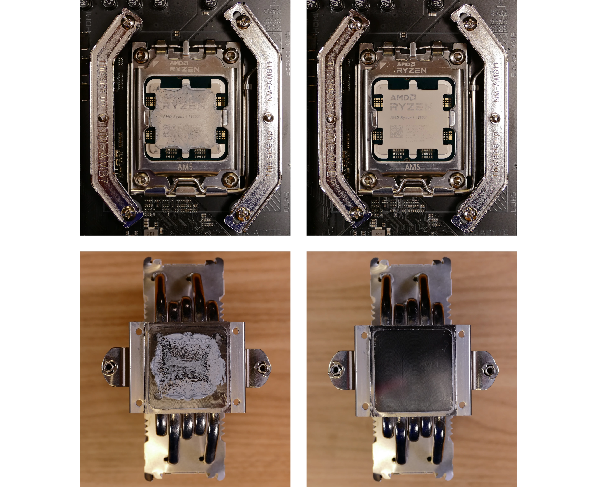
Steps to replace the CPU:
- Place the computer on its side so the motherboard is facing up.
- Unscrew and remove the cooler mounting bracket on the right side of the CPU.
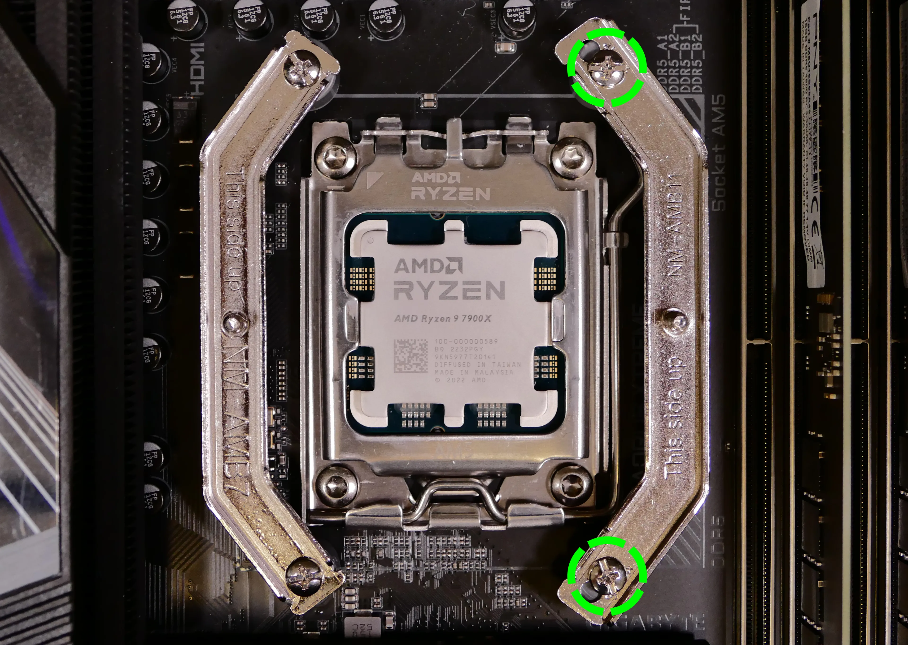
- Push the locking pin outward until it's able to spring away from the motherboard.
- Caution: the locking pin may spring up with significant force when freed.
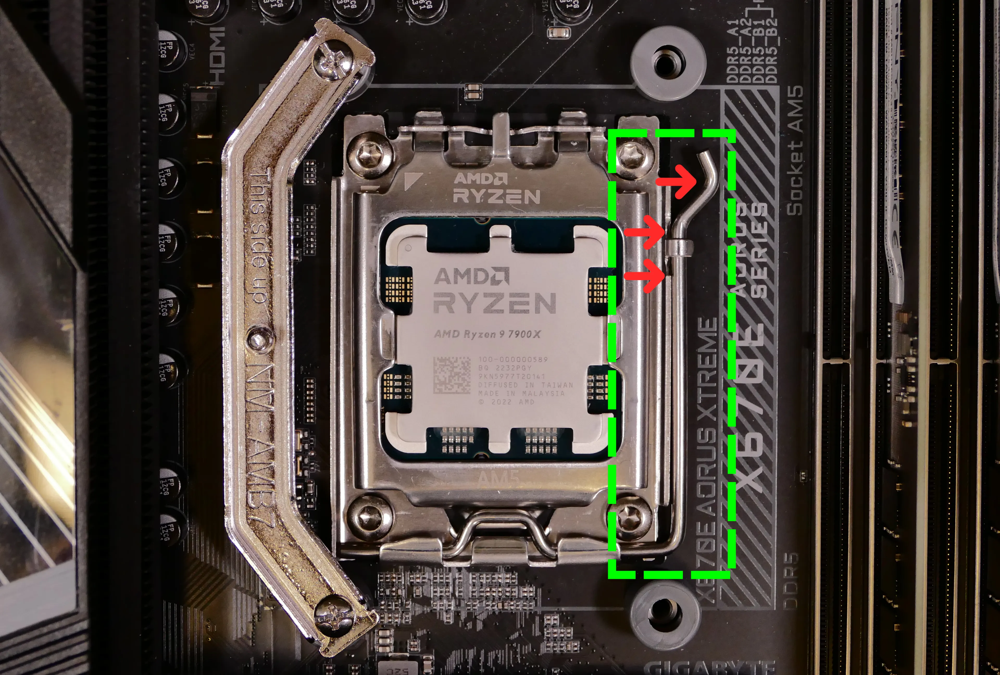
- Flip the CPU holder away from the CPU.
- The CPU holder opens in the opposite direction from the locking pin.
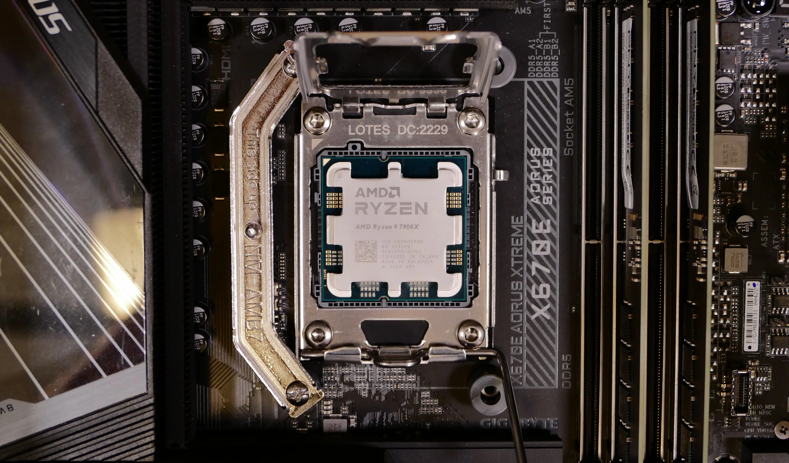
- Carefully lift the CPU out of the CPU socket.
- Be careful not to bend any of the gold pins on the CPU socket, and do not touch the gold pads on the CPU.
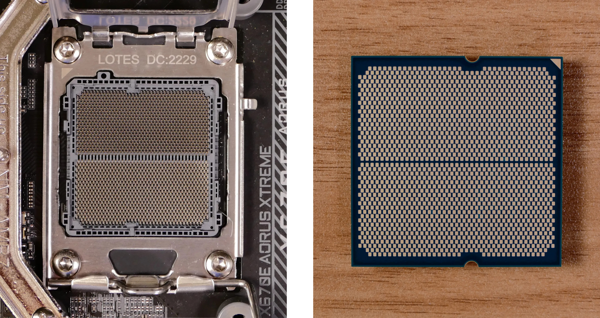
- Gently place the new CPU into the socket.
- The triangle on the CPU should be oriented to match the triangle on the CPU cover, pointing towards the top left of the motherboard.
- Flip the CPU cover back onto the CPU and push the locking pin down into place.
- Reinstall the right-side cooler mounting bracket.
Steps to install the thermal paste/CPU cooler:
- Draw an
Xshape of thermal paste onto the CPU.
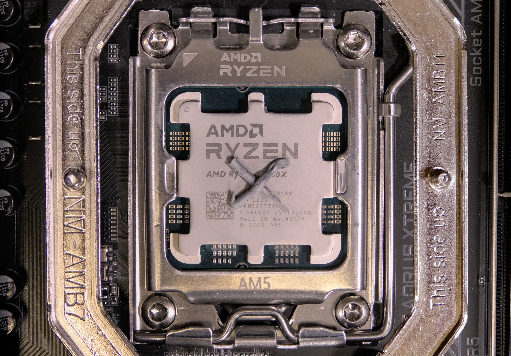
- Place the CPU cooler onto the CPU; while holding it in place, screw each end of the cooler crossbar onto one of the mounting brackets.
- The cooler should be oriented so the text is readable from the right side (front of the case).
- Insert each screw partially first, then fully tighten both.
- Set the computer upright, then reinstall the cooler-mounted CPU fan, CPU shroud, GPU, GPU bracket, and top case.
Replacing the power supply:
The power supply unit (PSU) is modular and can be replaced with another unit of the same model. Different models may not be compatible with the pre-installed cabling.
Tools required: Cross-head (Phillips) screwdriver
Time estimate: 20 minutes
Difficulty: Medium ●
Steps to replace the power supply:
- Follow the steps above to remove the top case and remove the GPU brace and bottom GPU.
- Unplug all of the modular cabling from the back of the PSU.
- Some of the cables may be easier to unplug after the PSU has been unscrewed/removed from the case.
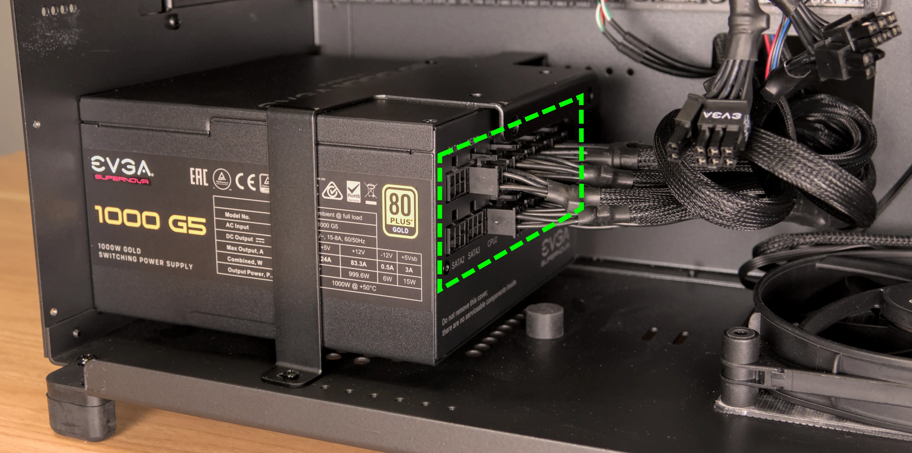
- Unscrew and remove the PSU bracket.
- One screw is located on the opposite side of the case.
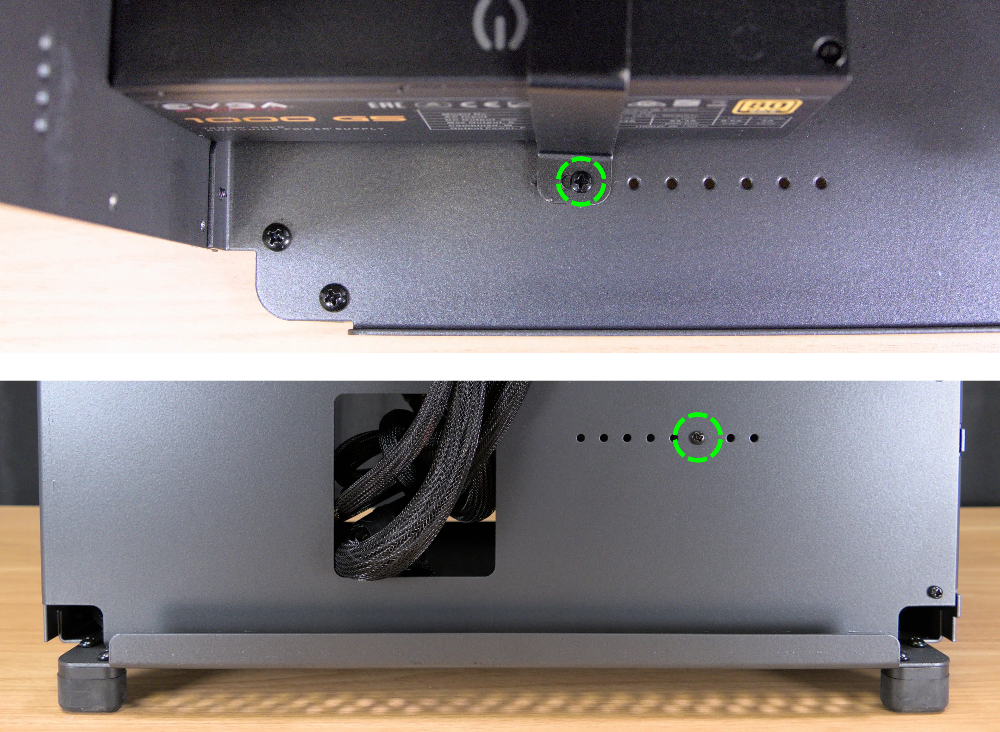
- Unscrew the four screws holding the PSU in from the back of the case.
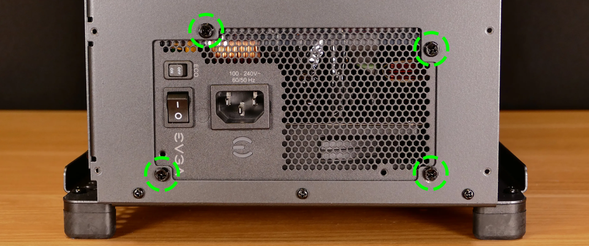
- Remove/replace the PSU.
- Set the replacement PSU on top of the rubber post that holds it at the correct height.
- The replacement PSU should be installed with the fan facing the bottom of the case.
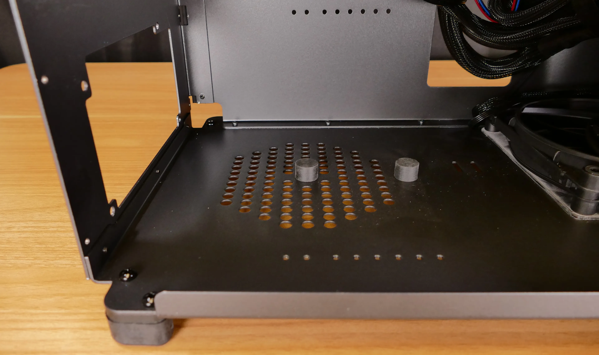
- After screwing in the replacement PSU, use the labels and pin counts on the cables and ports to ensure the power cables are reconnected in the proper locations.
- Remember that not all of the available connectors will plug into the PSU-- two 8-pin (6 + 1) connectors are to be plugged into the GPUs.
- If the replacement PSU has an
ECOswitch, make sure it is switched on for an optimal fan curve.
Replacing the Thelio-IO board:
Tools required: Cross-head (Phillips) screwdriver
Time estimate: 25 minutes
Difficulty: High ●
The Thelio-IO board handles the front power button, fan control, and 2.5" SATA connectors for the system. If the Thelio-IO board becomes defective, it can be replaced using the instructions below.
Steps to replace the Thelio-IO board:
- Follow the steps above to remove the top case and remove the 2.5" drive cage cover and any 2.5" drives that are installed.
- Use the cutouts on the front right corner of the chassis to unplug all cabling from the Thelio-IO board.
- The topmost connector requires pulling the white tab while unplugging.
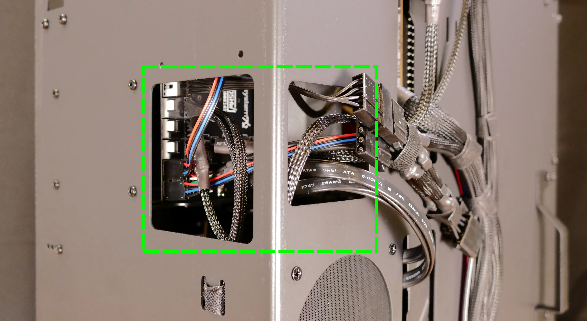
- Unscrew the two screws on the top side of the drive cage.
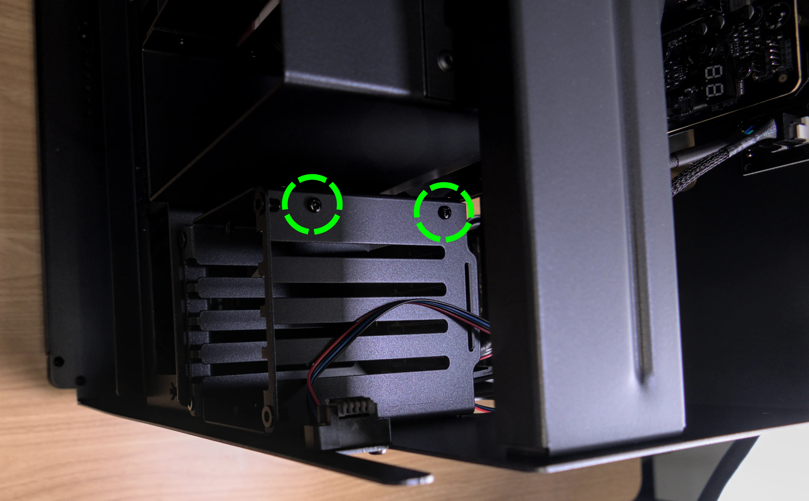
- While pulling the loose side of the drive cage away from the Thelio-IO board, move the board back and out of the drive cage.
- Place the new Thelio-IO board into the drive cage and replace the screws and wiring.
Thelio-IO wiring guide:
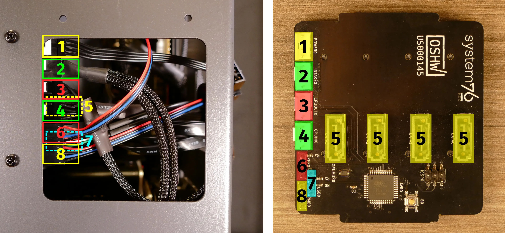
- When wiring the Thelio-IO board, refer to the above image and the following guide. The ports are numbered in the suggested connection order based on position and size.
- 1:
POWER0- to the power supplyPERIFport (via 4-pin Molex adapter.) - 2:
INTAKE0- to the case fans (via a Y splitter cable). - 3:
CPUOUT0- to the splitter board (near the top edge) connecting to both shroud-mounted CPU fans. - 4:
CPUIN0- to theCPU_FANheader at the top of the motherboard. 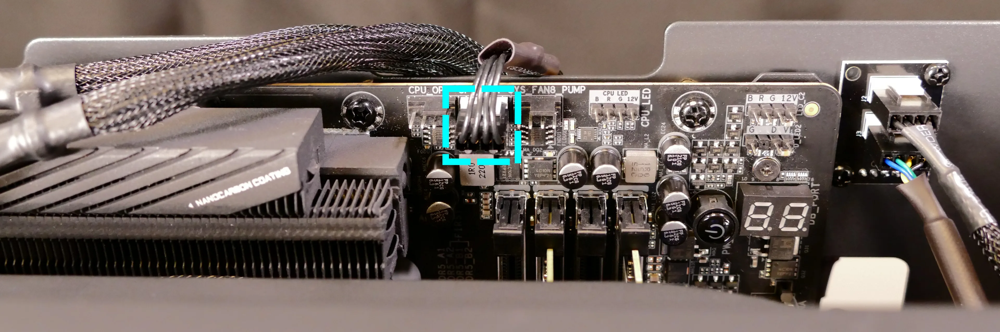 - 5:
DATA0/1/2/3- to SATA ports #0/#1/#2/#3 on the motherboard, highlighted green below.- The ports are located next to the top GPU slot.
- These connectors provide data transfer for the 2.5" drive slots. 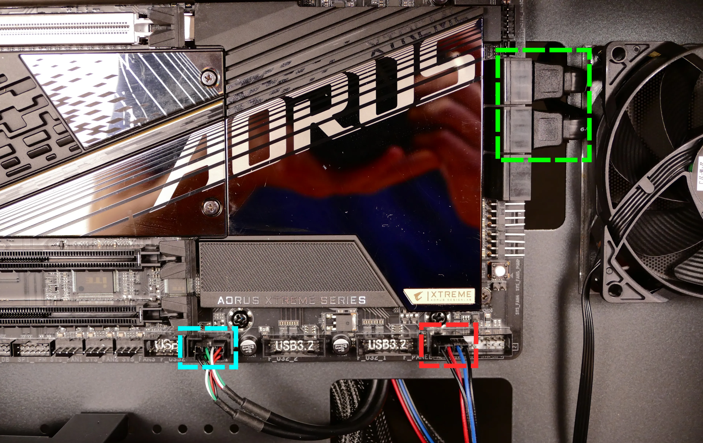
- 6*:
PFP0- to the power button receptacle on the front panel. - 7*:
USB0- to theF_USB1header on motherboard, highlighted cyan above.
- On the Thelio-IO board, the row of four pins plugs in, while the row of five pins hangs off the back and does not plug in.
- This connector provides fan control and firmware updates.
- 8*:
PMB0- to the+PLED-and+PW-pins (the four top-left pins of theF_PANELheader) on the motherboard, highlighted red above.- On the motherboard, the red wire goes on the inner-left and the blue wire goes on the inner-right. The corresponding black wires go on the outer-left and outer-right.
- * For all connectors with multi-colored wires plugging into the Thelio-IO board, the red wire goes on the top side (viewing from the front of the computer.)
- 1:
Troubleshooting the power button:
If the front power button doesn't power the machine on or doesn't light up when the system is powered on, try the following troubleshooting steps:
- Ensure the system powers on normally using the internal power button.
- Reseat the front power button to ensure it's making proper contact.
- Check the wiring for the front power button.
- Replace the front power button, if necessary.
Tools required: Cross-head (Phillips) screwdriver (optional)
Time estimate: 20 minutes
Difficulty: Medium ●
Steps to power the machine on using the internal power button:
- Follow the steps above to remove the top case.
- Ensure the system is plugged into power, and the power supply switch is in the 1 (On) position.
- Push the small button labeled
B0on the Thelio-IO board.
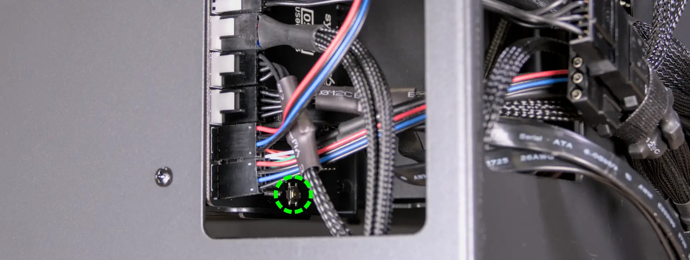
- If the Thelio-IO
B0button powers the machine on, then the issue is either the front power button or its connection to the Thelio-IO board. Check the front power button wiring. - If the Thelio-IO
B0button does not work, then the issue is either the Thelio-IO board or its connection to the motherboard. Check the wiring between the Thelio-IO board and the motherboard.
Steps to check the front power button wiring:
- Follow the steps above to remove the top case.
- On the back of the power button, the four pins should be connected to the four-wire connector as follows:

- On the front power button receptacle, the four-pin connector should have the red wire on the left and the black wire on the right (when viewed from the back of the computer.)
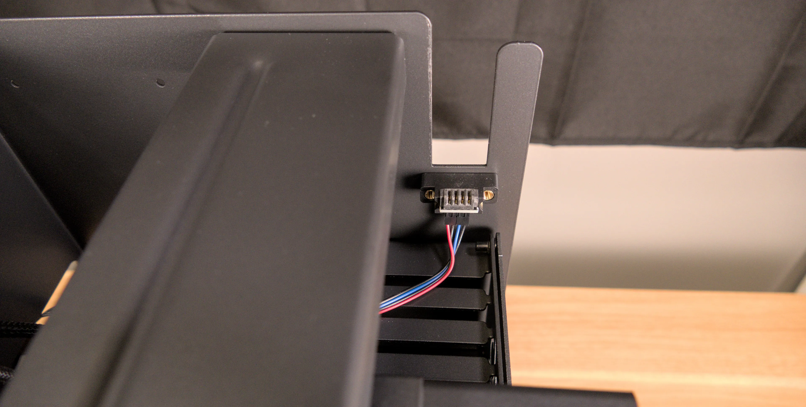
- The front power button receptacle should plug into the
PFPDport on the Thelio-IO board, with the red wire on the top (see the Thelio-IO wiring guide.)
Steps to replace the power button:
- Follow the steps above to remove the top case.
- Follow the instructions in the Replace the Thelio Power Button support article.